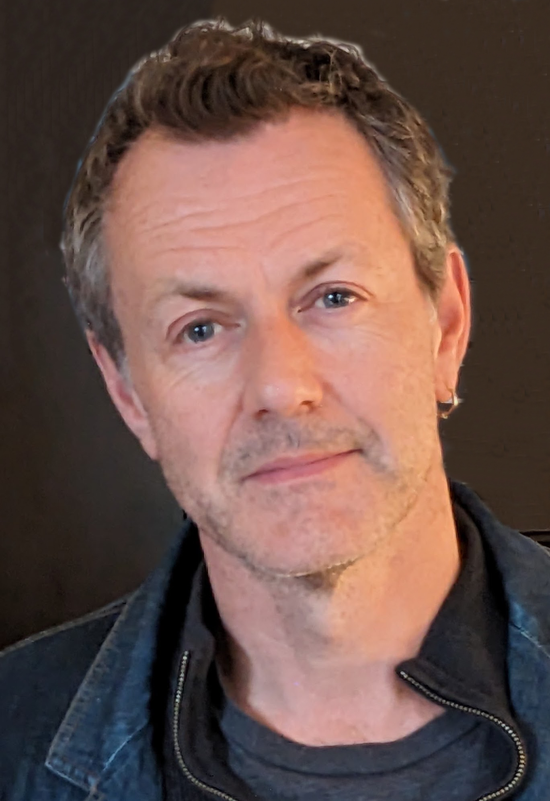

講師 / SPEAKER
マーク・トゥーリン先生
Prof. Mark Turin
ブリティッシュ・コロンビア大学 准教授
Associate Professor, University of British Columbia
講演詳細
- 📅 日付: 2025年4月10日（木）
- 🕒 時間: 午後4時30分から6時15分まで
- 📍 会場: 中央図書館集会室およびオンライン
- 🏛️ 主催: 筑波大学人文社会系
- 💪 実行係:宮川創（筑波大学人文社会系准教授）& 三原鉄也（筑波大学人文社会系助教）
受付終了 / Registration closed
講演について
この視覚的に豊かな講演では、言語学と人類学の分野における私自身の協力的かつ学際的な研究を、デジタル・ヒューマニティーズの成長の中に位置づけます。
デジタル・ヒューマニティーズ（DH）は、文学、言語、歴史、芸術などの人文科学を研究・分析するためにコンピューターツールと方法を使用し、デジタル技術が文化や学問一般に与える影響を探求する、刺激的で多様な分野です。
カナダ先住民社会とヒマラヤの両方で、私は歴史的に周縁化されたコミュニティと協力して、彼らの言語と文化的伝統を記録、保存、活性化し、彼らの知識が記録なしに失われないようにし、次世代の学習者をサポートしています。
私の研究は徹底してアナログから始まりました—道路から何日も歩いて到達する、電気のない村々に住んでいました—しかし現在はデジタル技術で深く満たされています。私は研究の成果が、学者とコミュニティのメンバーの両方にとって、印刷物、オンライン、そして放送を通じて利用可能であることを確実にするよう努めています。
研究分野
プロジェクト
世界口承文芸プロジェクト: 危機に瀕している口承文芸が記録なしに消滅する前に、それらを記録し、アクセス可能にするための緊急のグローバルイニシアチブ
デジタル・ヒマラヤ・プロジェクト: ヒマラヤ地域からのマルチメディアリソースをオンラインで広く利用できるようにするためのプラットフォームとして2000年に共同設立
略歴
マーク・トゥーリン先生（PhD、言語学、ライデン大学、2006年）は人類学者、言語学者、そして時折ラジオの司会者であり、ブリティッシュ・コロンビア大学の准教授です。彼は危機にある先住民研究所と人類学部の間でクロスアポイントメントされています。トゥーリン先生は現在、東京大学の東京カレッジの招聘教授です。
2014年から2018年まで、トゥーリン先生はファースト・ネーションおよび危機言語プログラムの議長を務め、2016年から2018年までは大学の新しい危機にある先住民研究所の代理共同ディレクターを務めました。トゥーリン先生は、記録なしに消滅する前に危機に瀕した口承文芸を記録し、アクセス可能にするための緊急のグローバルイニシアチブである「世界口承文芸プロジェクト」と、2000年にヒマラヤ地域からのマルチメディアリソースをオンラインで広く利用できるようにするためのプラットフォームとして共同設立した「デジタル・ヒマラヤ・プロジェクト」の両方を指揮しています。
Lecture Details
- 📅 Date: April 10, 2025 (Thursday)
- 🕒 Time: 16:30-18:15 (Japan Time)
- 📍 Venue: Central Library Lecture Room (Tentative) and online
- 🏛️ Host: University of Tsukuba, Faculty of Humanities and Social Sciences
- 💪 Organizers:So Miyagawa (U. of Tsukuba, Inst. of Hum. & Soc. Sci., Assoc. Prof.) & Tetsuya Mihara (U. of Tsukuba, Inst. of Hum. & Soc. Sci., Assis. Prof.)
Registration closed
About the Lecture
In this visually rich lecture, I situate my own collaborative and multidisciplinary work in the disciplines of linguistics and anthropology within the growth of Digital Humanities.
An exciting and diverse field, Digital Humanities (DH) scholarship uses computational tools and methods to study and analyze humanities disciplines—including literature, language, history, and art—while also exploring the impact of digital technologies on culture and scholarship more generally.
In both Indigenous Canada and in the Himalaya, I work with historically marginalized communities who are documenting, preserving and revitalizing their languages and cultural traditions so that their knowledge is not lost without record and to support the next generation of learners.
My work started out as resolutely analogue—I lived in villages many days walk from a road with no electricity—but is now deeply saturated with digital technologies. I strive to ensure that the products of my research are available to all—scholars and community members alike—in print, online and on air.
Research Areas
Projects
World Oral Literature Project: An urgent global initiative to document and make accessible endangered oral literatures before they disappear without record
Digital Himalaya Project: Co-founded in 2000 as a platform to make multi-media resources from the Himalayan region widely available online
Biography
Prof. Mark Turin (PhD, Linguistics, Leiden University, 2006) is an anthropologist, linguist and occasional radio presenter, and an Associate Professor at the University of British Columbia. He is cross-appointed between the Institute for Critical Indigenous Studies and the Department of Anthropology. Prof. Turin is currently an Invited Professor at Tokyo College.
From 2014-2018, Prof. Turin served as Chair of the First Nations and Endangered Languages Program and from 2016-2018, as Acting Co-Director of the University's new Institute for Critical Indigenous Studies. Prof. Turin directs both the World Oral Literature Project, an urgent global initiative to document and make accessible endangered oral literatures before they disappear without record, and the Digital Himalaya Project which he co-founded in 2000 as a platform to make multi-media resources from the Himalayan region widely available online.